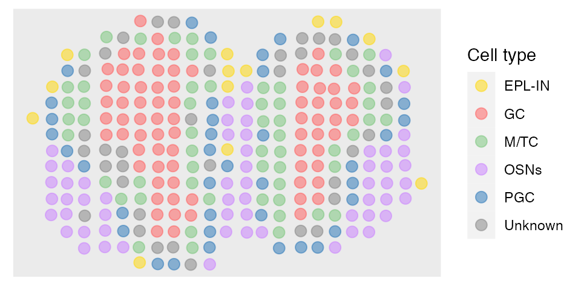
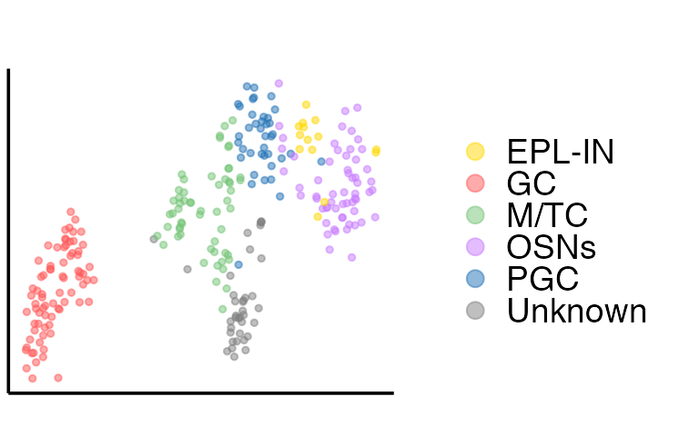
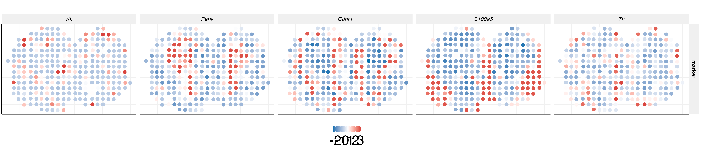

MOB.RmdWe obtained the mouse olfactory bulb ST data from the spatial transcriptomics research website (https://www.spatialresearch.org/). This data consists of gene expression levels in form of read counts which are collected for a number of spatial locations. We followed to focus on the mouse OB section 12, which contains 16,034 genes and 282 spatial locations. The gene expression of mouse OB section 12 and ground truth are both stored in the R package SpatialAnno.
First, we load the MOB dataset and extract the position of each spot from spot name. The four anatomic layers manually annotated based on H&E staining was taken as ground truth.
set.seed(99)
library(SpatialAnno)
library(Seurat)
load(paste0(path.package("SpatialAnno"), "/extdata/Rep12_MOB_count_matrix-1.RData"))
print(MOB_raw[1:6,1:6])## 6 x 6 sparse Matrix of class "dgCMatrix"
## 16.918x16.996 18.017x17.034 20.075x17.059 18.979x17.065 21.937x16.967
## Plekha1 5 1 . . 1
## Cnih3 1 1 1 . .
## Gpc5 1 . . . .
## Sirt3 2 1 . . .
## Rab8a 5 1 . . 1
## Nadk 1 1 . 1 1
## 20.899x17.015
## Plekha1 .
## Cnih3 1
## Gpc5 1
## Sirt3 .
## Rab8a .
## Nadk .
pos = cbind.data.frame(x=as.numeric(sapply(strsplit(colnames(MOB_raw),split="x"),"[",1)),y=as.numeric(sapply(strsplit(colnames(MOB_raw),split="x"),"[",2)))
head(pos)## x y
## 1 16.918 16.996
## 2 18.017 17.034
## 3 20.075 17.059
## 4 18.979 17.065
## 5 21.937 16.967
## 6 20.899 17.015
load(paste0(path.package("SpatialAnno"), "/extdata/Rep12_MOB_manual_annotation.RData"))
y2 = Rep12_MOB_manual_annotation
y2[y2=="GCL"] = "GC"
y2[y2=="MCL"] = "M/TC"
y2[y2=="ONL"] = "OSNs"
y2[y2=="GL"] = "PGC"Then we construct the Seurat object with the raw count of MOB.
MOB <- CreateSeuratObject(counts = MOB_raw, project = "MOB")Then we perform the normalization using function SCTransform implemented in R package Seurat.
MOB = SCTransform(MOB)
X = t(MOB@assays$SCT@scale.data)Then we read the cell-type-specific marker information and construct a cell type marker matrix. Top four DEGs of the scRNA-seq data from Gene Expression Omnibus (GEO;accession number GSE121891) are selected as markers based on log-fold change.
marker <- vector("list", 5)
names(marker) = c("GC", "PGC", "M/TC", "OSNs", "EPL-IN")
marker[[1]] = c("Gria2", "Meis2", "Prkca", "Penk")
marker[[2]] = c("Nppa", "Nrsn1", "Nxph1", "Th")
marker[[3]] = c("Cdhr1", "Slc17a7", "Olfm1", "Reln")
marker[[4]] = c("Gng13", "S100a5", "Omp", "Fam213b")
marker[[5]] = c("Kit", "Thy1", "Dner", "Spock2")
rho <- marker_list_to_mat(marker, TRUE)
colnames(rho)[ncol(rho)] = "Unknown"
head(marker)## $GC
## [1] "Gria2" "Meis2" "Prkca" "Penk"
##
## $PGC
## [1] "Nppa" "Nrsn1" "Nxph1" "Th"
##
## $`M/TC`
## [1] "Cdhr1" "Slc17a7" "Olfm1" "Reln"
##
## $OSNs
## [1] "Gng13" "S100a5" "Omp" "Fam213b"
##
## $`EPL-IN`
## [1] "Kit" "Thy1" "Dner" "Spock2"Then we find the neighborhoods using the function getneighborhhod_fast implemented in our package SpatialAnno, with specifying the cutoff as 1.2 to ensure that the median number of neighboorhoods is about 4, as MOB was sequenced on the platform ST. After obtaining the sparse neighborhoods matrix Adj_sp, we can run SpatialAnno with normalized gene expression matrix X, sparse neighborhoods matrix Adj_sp, and a list of markers marker. Note that we choose the initial value from annotation methods SCINA due to the large number of non-markers.
Adj_sp <- getneighborhood_fast(as.matrix(pos), cutoff = 1.2)
fit <- SpatialAnno(X = X, Adj_sp = Adj_sp, marker = marker, initial = "SCINA")## [1] "Gria2" "Meis2" "Penk" "Prkca"
## [1] "Nppa" "Nrsn1" "Nxph1" "Th"
## [1] "Cdhr1" "Olfm1" "Reln" "Slc17a7"
## [1] "Fam213b" "Gng13" "Omp" "S100a5"
## [1] "Dner" "Kit" "Spock2" "Thy1"
## iter = 2, loglik= -1022883.466774, dloglik=0.999524
## iter = 3, loglik= -1022389.735795, dloglik=0.000483
## iter = 4, loglik= -1022343.565449, dloglik=0.000045
## iter = 5, loglik= -1022330.201749, dloglik=0.000013
## iter = 6, loglik= -1022317.792909, dloglik=0.000012
## iter = 7, loglik= -1022308.740946, dloglik=0.000009
## iter = 8, loglik= -1022297.279651, dloglik=0.000011
## iter = 9, loglik= -1022291.161422, dloglik=0.000006
## iter = 10, loglik= -1022287.419029, dloglik=0.000004
## iter = 11, loglik= -1022280.593982, dloglik=0.000007
## iter = 12, loglik= -1022277.870902, dloglik=0.000003
## iter = 13, loglik= -1022274.239868, dloglik=0.000004
## iter = 14, loglik= -1022271.060462, dloglik=0.000003
## iter = 15, loglik= -1022269.511761, dloglik=0.000002
## iter = 16, loglik= -1022268.370673, dloglik=0.000001
## iter = 17, loglik= -1022267.370783, dloglik=0.000001We demonstrate the output of SpatialAnno, which is a list contains many items. We will briefly explain them one by one in the following part.
str(fit)## List of 13
## $ R : num [1:282, 1:6] 1.00 2.41e-22 1.80e-40 8.22e-39 6.75e-25 ...
## $ xi : num 2.3
## $ type : int [1:282, 1] 1 2 4 4 3 2 3 1 3 4 ...
## $ alpha_m: num [1:20, 1] -0.252 -0.453 -0.594 -0.434 -0.129 ...
## $ bet_m : num [1:20, 1:6] 0.935 1.681 2.205 1.61 0 ...
## $ mu_m : num [1:20, 1:6] 0.683 1.228 1.611 1.176 -0.129 ...
## $ sigma_m: num [1:20, 1] 1.044 0.888 0.837 0.87 0.82 ...
## $ Ez_u : num [1:282, 1:15] -18.23 8.72 2 1.82 13.02 ...
## $ Mu_u : num [1:6, 1:15] -14.93 6.49 10.53 1.11 1.21 ...
## $ Sgm_u : num [1:15, 1:15] 10.37 -4.65 2.53 -2.71 1.55 ...
## $ W_u : num [1:2980, 1:15] -0.01471 -0.01073 0.00933 -0.03249 -0.02646 ...
## $ Lam_u : num [1:2980, 1] 0.938 0.961 0.814 0.634 0.962 ...
## $ loglik : num [1:16] -2.15e+09 -1.02e+06 -1.02e+06 -1.02e+06 -1.02e+06 ...SpatialAnno.The predictions can be obtained in the following way. Then we can plot the annotation results of SpatialAnno on the spatial positions using R package ggplot2.
## [1] "GC" "PGC" "OSNs" "OSNs" "M/TC" "PGC" "M/TC"
## [8] "GC" "M/TC" "OSNs" "OSNs" "OSNs" "OSNs" "OSNs"
## [15] "OSNs" "Unknown" "PGC" "Unknown" "GC" "GC"
library(ggplot2)
library(scales)
library(RColorBrewer)
colfunc <- colorRampPalette(c("red", "white"))
fit_type = colnames(rho)[fit$type]
dat = data.frame(pos[,1], pos[,2], factor(fit_type))
names(dat)= c("imagerow", "imagecol", "Cell type")
p1 <- ggplot(dat, aes(x=imagerow, y=imagecol, color=`Cell type`)) +
geom_point(size = 3, alpha = 0.5) +
theme(axis.text.x = element_blank(),
axis.text.y = element_blank(),
axis.title.x = element_blank(),
axis.title.y = element_blank(),
panel.grid.major = element_blank(),
panel.grid.minor = element_blank(),
panel.border = element_blank(),
axis.ticks = element_blank())+
guides(colour = guide_legend(override.aes = list(size = 3))) + scale_color_manual(values=c(c("#FFD700", colfunc(100)[(7)*5], brewer.pal(9, "Greens")[5],hue_pal()(4)[4], brewer.pal(9, "Blues")[7]), "#808080"))
p1
After obtaining the predictions, we can calculate Kappa, mF1 (mean F1), and acc to evalute the performance of annotation results by SpatialAnno. The function cohen.kappa to calculate Kappa is implemented in the package psych. The function evaluate to calculate mF1 is implemented in our package SpatialAnno. The Kappa is
library(psych)
idx = which(y2!="Unknown" & prediction!="Unknown")
Kappa = cohen.kappa(x = cbind(y2[idx], prediction[idx]))$kappa
print(Kappa)## [1] 0.7391692The mF1 is
## [1] 0.8138647The acc is
## [1] 0.8Then we extract the embeddings from the output of SpatialAnno, and plot the tSNE and calculate ARI with the function adjustedRandIndex implemented in the R package mclust
## [,1] [,2] [,3] [,4] [,5] [,6] [,7]
## [1,] -18.228770 15.640597 -8.5896255 4.426338 1.0558159 7.3838150 -5.827854
## [2,] 8.717592 -7.960629 -5.5023852 1.197099 3.7835684 -0.8201792 -2.920445
## [3,] 2.001903 -3.850211 1.2476928 -1.565176 -0.4773491 -18.8862657 21.000166
## [4,] 1.823851 -3.460382 5.1927435 -1.211686 2.2126560 -13.5406390 11.973193
## [5,] 13.017165 7.302807 -0.3653341 -1.301280 -2.0256613 4.9303242 -2.443902
## [6,] 4.938710 -2.023808 -1.9841202 3.138582 1.5821686 2.0986954 -1.698943
## [,8] [,9] [,10] [,11] [,12] [,13]
## [1,] 2.264353 -3.69928581 1.0718249 -1.45476754 -1.0693397 0.04821921
## [2,] 5.343680 -2.33882184 0.5669334 -3.82606817 0.7485158 1.19534126
## [3,] 4.764045 -5.68965761 -5.8818437 0.84893472 3.1287520 1.31251372
## [4,] 5.097046 0.08194153 -5.1038824 -0.30378157 12.5101063 -8.82683819
## [5,] -3.284255 -2.01694464 0.6703394 -0.04856227 -1.1720375 -0.62960772
## [6,] 3.484273 -0.97269636 -0.8826282 3.87656553 -0.2722532 0.31662710
## [,14] [,15]
## [1,] 1.189905 2.935940083
## [2,] 2.670998 -2.053067683
## [3,] 3.041590 -5.033696367
## [4,] 7.921903 -5.806457120
## [5,] 3.238418 0.008782105
## [6,] 3.724550 1.675002258
tsne = calculateTSNE(t(as.matrix(embedding)))The tSNE plot is
dat = as.data.frame(tsne)
colnames(dat) = c("X", "Y")
dat$cluster = prediction
library(ggplot2)
p1 <- ggplot(dat, aes(x=X, y=Y, color=cluster)) +
geom_point(size = 1, alpha = 0.5) +
theme_Publication()+
theme(legend.position = "right",
legend.text = element_text(size=14),
axis.text.x = element_blank(),
axis.text.y = element_blank(),
axis.title.x = element_blank(),
axis.title.y = element_blank(),
panel.grid.major = element_blank(),
panel.grid.minor = element_blank(),
panel.border = element_blank(),
axis.ticks = element_blank())+
guides(colour = guide_legend(override.aes = list(size = 3), ncol=1)) + scale_color_manual(values=c(c("#FFD700", colfunc(100)[(7)*5], brewer.pal(9, "Greens")[5],hue_pal()(4)[4], brewer.pal(9, "Blues")[7]), "#808080"))
p1
Then we perform the clustering analysis with GMM (other clustering methods are also can be used) on embeddings and calculate ARI. The ARI is
fit2 = Mclust(embedding, G = 5:10)
ARI = adjustedRandIndex(y2, fit2$classification)
print(ARI)## [1] 0.4637656We can also plot RGB plot with the function plot_RGB implemented in PRECAST. The RGB plot is demonstrated as follows
library(PRECAST)
tsne3dim = calculateTSNE(t(embedding), ncomponents = 3)
pList <- plot_RGB(pos, tsne3dim, pointsize = 2)
pListWe can also plot the expression levels of corresponding cell type-specific marker genes.
genes = c("Kit", "Penk","Cdhr1", "S100a5", "Th")
for (i in 1:5){
if (i == 1){
idx = match(genes[i], colnames(X))
dat = data.frame(pos[,1], pos[,2], X[,idx])
names(dat)= c("imagerow", "imagecol", "cluster")
dat$gene = genes[i]
}else{
idx = match(genes[i], colnames(X))
dat2 = data.frame(pos[,1], pos[,2], X[,idx])
names(dat2)= c("imagerow", "imagecol", "cluster")
dat2$gene = genes[i]
dat = rbind(dat, dat2)
}
}
cols <- c("#0571B0", "#CA0020")
quant = 0.5
med <- apply(MOB[["SCT"]]@scale.data[c("Kit", "Penk","Cdhr1", "S100a5", "Th"),], 1, quantile, quant)
dat$gene = factor(dat$gene, levels = genes)
dat$marker = "marker"
p2 <- ggplot(dat, aes(x=imagerow, y=imagecol, color=cluster))+
geom_point(size = 3) +
facet_grid(marker~gene, scales = "free")+
scale_colour_gradient2(
low = cols[1],
mid = "white",
high = cols[2], midpoint = 0.5)+
theme_Publication()+
theme(axis.title.x=element_blank(),
axis.text.x=element_blank(),
axis.ticks.x=element_blank(),
axis.title.y=element_blank(),
axis.text.y=element_blank(),
axis.ticks.y=element_blank(),
strip.text.x = element_text(face = "italic"))
p2